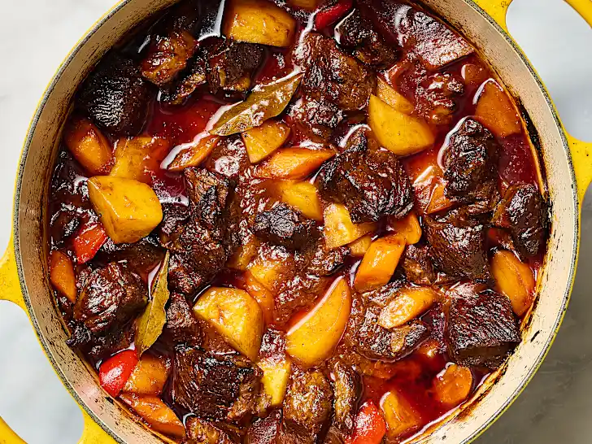

Mechado a Filipino Beef Stew Recipe
Home

Description
Mechado is classic Filipino beef stew with a rich, tomato-based sauce, often containing ingeredients like potatoes and carrots. Its name comes from the Spanish word for "wick", referring to the traditional method of larding the meat with strips of pork fat to add flavor and moisture. It is known for its savory and slightly tangy flavor profile, derived from ingredients such as soy sauce, garlic, onions, and citrus juice (like calamansi).
Ingredients:
- 1 (3-pound) boneless beef chuck roast, trimmed and cut into 1 1/2-inch pieces
- 1 tablespoon neutral oil, such as canola
- 1 medium yellow onion, thinly sliced (about 2 cups)
- 5 cloves garlic, minced
- 3 cups water
- 1 (15-ounce) can tomato sauce
- 1/3 cup soy sauce or tamari
- 1 tablespoon packed light or dark brown sugar
- 3 dried bay leaves
- 1/4 teaspoon freshly ground black pepper
- 1 pound Yukon Gold potatoes (about 2 large or 4 medium), peeled and cut into 1-inch pieces
- 8 ounces carrots (about 3 medium), peeled and cut crosswise into 1/2-inch pieces
- 1 large red bell pepper, cut into 1-inch pieces (about 1 1/2 cups)
- Rice for serving
Steps:
- This recipe can be made entirely on the stovetop, or you can do Steps 5 and 7 in the oven. If using the oven, arrange a rack in the lower third of the oven and heat the oven to 325°F; make sure your pot is oven-safe.
- Heat 1 tablespoon neutral oil in a large Dutch oven or heavy-bottomed pot over medium-high heat until shimmering. Add half of the boneless beef chuck roast pieces and sear, stirring occasionally, until browned all over, 6 to 8 minutes. Transfer to a large plate. Add the remaining beef to the pot and repeat searing. Transfer all of the beef to the plate.
- Reduce the heat to medium. Add 1 thinly sliced medium yellow onion and 5 minced garlic cloves to the pot. Cook until the onion is softened, 4 to 5 minutes. Stir in 3 cups water, 1 (15-ounce) can tomato sauce, 1/3 cup soy sauce, 1 tablespoon packed brown sugar, 3 dried bay leaves, and 1/4 teaspoon black pepper. Scrape up any browned bits from the bottom of the pot.
- Return the beef chuck roast pieces and their accumulated juices to the pot and stir to combine. Bring to a boil over medium-high heat.
- Cover and transfer the pot to the oven, or cover and reduced the heat to maintain a simmer. Cooked for 1 hour and 20 minutes.
- Stir in 1 pound peeled and chopped Yukon Gold potatoes and 8 ounces peeled and chopped carrots. Scatter 1 chopped large red bell pepper over the top.
- Cover and return to the oven, or bring back to a simmer and cover again. Cook until the beef is very tender, about 1 hour more.
- Remove and discard the bay leaves if desired.
- Serve with rice.